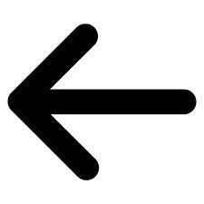
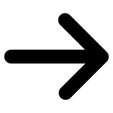

<div class="slider">
  <div class="slider-slide slide-animation" ng-repeat="image in images" ng-show="image.visible">
    
  </div>
  
  <a href="" class="slider-arrows slider-arrows-left" ng-click="prev()">
    <!--  -->
  </a>
  <a href="" class="slider-arrows slider-arrows-right" ng-click="next()">
    <!--  -->
  </a>
  <nav class="slider-nav">
  <div class="slider-nav-wrapper">
   <!-- <ul class="slider-nav-dots"> -->
      <li class="slider-nav-dot" ng-repeat="slide in images" ng-click="setCurrentSlideIndex($index);">
        <a ng-class="{'active':isCurrentSlideIndex($index)}" href=""></a></li>
      </ul>
    </div>
  </nav>
</div>